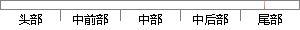

系统测试是指在开发工作完成后按照一定测试方法对系统的进行全方位、多角度评测。
片段位置图

相似结果|
相似片段 1：过程中，按照以上四个测试层面进行逐一测试和检测，系统交付测试过程中，由国家软件检测中心给予相关测试数据和评测报告，同时由用户实地验证系统功能，实际上线性能测试，完成系统的开发交付工作。5．6．1系统测试
相似片段 2：客户提供更加灵活的使用方式。5.3 系统测试系统测试是指在程序开发完成后，对其功能结构框架、数据库、程序代码、运作环境、运行稳定性等多方面进行系统化的验证工作。在本系统中，测试工作被分为外部测试和
相似片段 3：。本次系统在开发过程中，按照以上四个测试层面进行逐一测试和捡测，系统交付测试过程中．由国家软件检测中心给予相关测试数据和评测报告，同时由用户实地验证系统功能．实际上线性能测试．完成系统的开发交付工作
|
※ 片段修改建议 ※
近似词参考：- 系统：体系
- 开发：开辟
- 工作：事情
- 按照：依照 根据
- 一定：必然 肯定 必定
- 方法：方式 要领 法子
- 系统：体系
- 进行：举行
系统自动生成语句：体系测试是指在开辟事情完成后依照必然测试方式对体系的举行全方位、多角度评测。
注：本片段修改建议为系统自动生成，仅供参考。